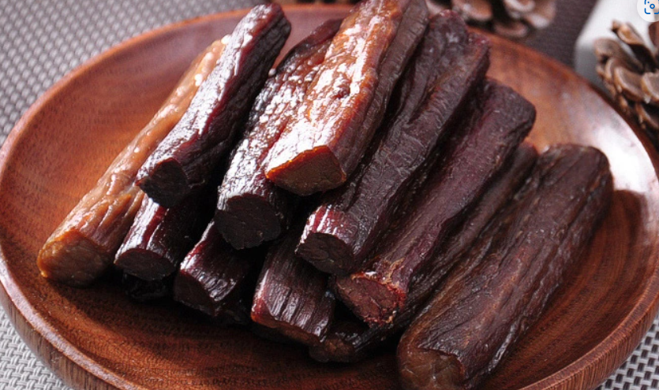

赤峰文旅
🕐 最佳季节：6-10月
🌡️ 夏季均温：20°C
🧥 早晚温差大备外套
📸 日出日落最出片

烤全羊是蒙古族招待贵宾的最高礼仪，也是草原盛宴上最隆重的压轴大菜。选用草原上等绵羊，经秘制调料腌制后，在特制的烤炉中用果木炭火慢烤数小时。烤制过程中需不断翻动并刷上特制酱料，使表皮呈现诱人的金黄色泽，外皮酥脆、肉质鲜嫩多汁。上桌时羊头系红绸，由最尊贵的客人执刀切下第一块羊肉，仪式感十足。搭配草原烈酒，大快朵颐之间尽显草原儿女的豪迈与热情。

手把肉是最能体现草原饮食文化的经典菜肴。将大块带骨羊肉放入清水锅中，不加过多佐料，仅以少许盐和葱姜调味，文火慢煮至肉质软烂。食用时每人手持一把蒙古小刀，从骨上将肉剔下蘸盐而食，保留了羊肉最本真的鲜美滋味。吃手把肉讲究"一手把肉、一手持刀"，粗犷豪放的吃法体现了蒙古族人民与自然共生的智慧。配上一碗热气腾腾的羊肉原汤，撒上一把野葱花，便是草原上最温暖的人间至味。

蒙古奶茶是草原牧民日常生活中不可或缺的传统饮品。用青砖茶捣碎后放入铜壶中煮沸，待茶汤变成深褐色时兑入新鲜牛奶，加入适量盐调味，咸香浓郁、别具风味。草原牧民"一日不可无茶"，清晨一碗热腾腾的奶茶配上炒米、奶皮子和手把肉，便是最温暖的早餐。远道而来的客人进门，主人必定先奉上一碗奶茶，这是草原上最真挚的待客之道。奶茶不仅解渴暖身，更承载着蒙古族人民对生活的热爱和对客人的尊重。

奶豆腐是蒙古族最经典的传统奶制品，用纯鲜牛奶自然发酵后加热凝固，压制成洁白如玉的块状。口感细腻绵密、奶香浓郁纯正。可以直接切片食用，也可切成条状油炸至表面金黄，外酥里嫩、蘸上白糖更是美味。奶豆腐富含优质蛋白质和钙质，是草原牧民世代传承的营养佳品。在蒙古族婚礼和重要节庆中，奶豆腐是必不可少的美食，象征着纯洁与丰收。如今奶豆腐已成为内蒙古最受欢迎的伴手礼之一。

风干牛肉是蒙古族传承千年的传统肉制品，精选草原黄牛后腿瘦肉，剔除筋膜后切成长条，经食盐和香料腌制，悬挂在通风处利用草原干燥的自然风慢慢风干而成。成品色泽暗红油亮，肉质紧实嚼劲十足，越嚼越香回味悠长。风干牛肉既保留了牛肉的天然营养和醇香，又便于长期保存和携带，是游牧民族适应草原生活的智慧结晶。如今这一古老技艺已入选非物质文化遗产，风干牛肉也成为畅销海内外的草原名产。